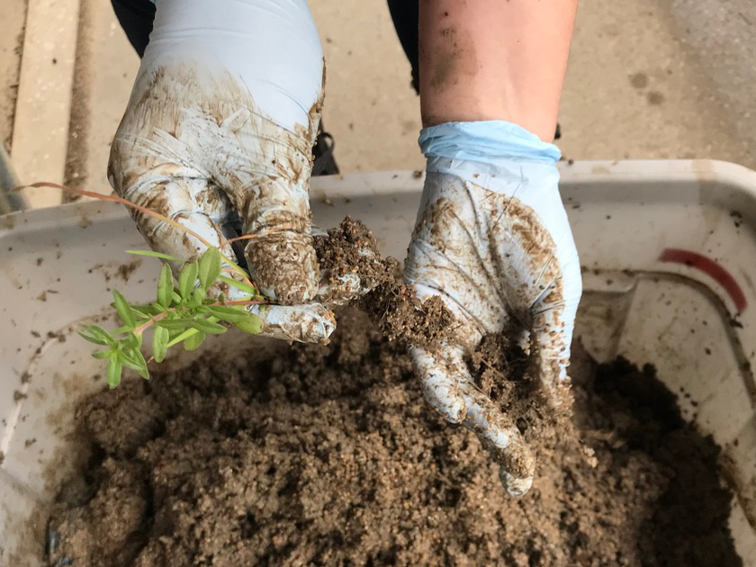
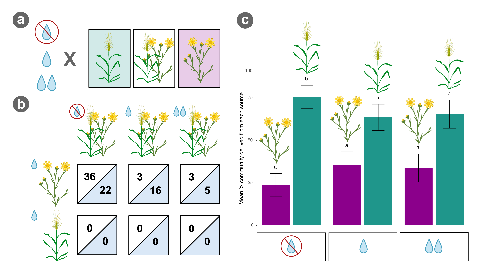

		<!-- Main -->
			<article id="main">
					
				<!-- One -->
					<section class="wrapper style4 container">
					
						<!-- Content -->
							<div class="content">
								<section>
										<header>
										<h3><strong>Microbial communities of native wildflowers and invasive grasses
</strong></h3> </header>


<div class="row">

<div class="6u">
<a class="image featured special"></a></div>

<div class="6u">
<p> While the rhizosphere is one of the most diverse terrestrial ecosystems and directly influences the cycling of nutrients within an ecosystem, relatively little is known about microbial community assembly and how plant species identify and interact with microbial species pools to determine the composition and abundance of the rhizosphere soil community.  </p>

</div>

</div>

<div class="row">


	<div class="6u">
		<p> I am collaborating with <a href="https://marinalaforgia.github.io/"> Dr. Marina LaForgia</a>, to study how below-ground plant-microbe feedback loops during competition between native wildflowers and invasive grass species in California grasslands across varying precipitation regimes. This study involves a field experiment which uses metagenomic sequencing to assess microbial community assembly and function during competition between communities of invasive grasses and native wildflowers grown in combination under varying precipitation regimes. It also involves a greenhouse experiment which uses high throughput sequencing of the 16S rRNA gene and internal transcribed spacer (ITS) regions to look at the rhizosphere communities of each grass / wildflower species when grown alone as well as in pair-wise combinations. 
		  </p>

	</div>

	<div class="6u">
		<br>
		<br>
		<a class="image featured special"></a>
	</div>

</div>

<div class="row">

	<div class="6u">
		<br>
		<a class="image featured special"></a>
	</div>


	<div class="6u">
		<p> In our greenhouse study, we found that the bacterial alpha and beta diversity differed between native forbs and invasive grasses, but that fungal alpha and beta diversity did not. We also found that bacterial beta diversity during competition was distinct from individual plant bacterial beta diversity. We also identified five bacterial families that varied in normalized abundance during competition and that were correlated with plant biomass under competition. We speculate that invasive grass dominance over these natives may be partially due to effects on the rhizosphere community, with changes in specific bacterial families potentially benefiting invaders at the expense of natives.

		  </p>

	</div>

</div>


<a class="image featured special">
		<p> Graphical abstract summarizing main results of our field study. (a) We set up an experiment in a California grassland with a set of native forbs (purple) and invasive grasses (teal) to assess the combined effects of competition and water availability (drought, control, watered) on the rhizosphere microbiome. (b) Drought combined with competition from invaders altered the relative abundance of 36 functions (white) and 22 microbial families (blue) in the native rhizosphere compared to the effects of competition (3 functions, 16 families) or drought alone on natives (not shown: 5 functions, 0 families). (c) Additionally, regardless of watering treatment, invasive grasses sourced more of the taxonomic community in native-invasive mixes and this was exacerbated during drought. Overall, these results suggest invasion-driven shifts in the microbiome may be involved in weakening natives’ ability to cope with climate change, especially drought.
</p>
		</a>
		
	

		<p>
		<b>Related publications:</b>
		<ul class="default">
		       		<li> <b> Ettinger CL</b> & LaForgia ML. 2023. Invasive plant species interact with drought to shift key functions and families in the rhizosphere. Plant and Soil. DOI:  <a href= "https://doi.org/10.1007/s11104-023-06302-1">10.1007/s11104-023-06302-1 </a></li>
		        </li>
			
		<li> LaForgia ML, Kang H* &<b> Ettinger CL</b>. 2021. Competitive outcomes between native and invasive plants are linked to shifts in the bacterial rhizosphere microbiome. Microbial Ecology DOI: <a href= "https://doi.org/10.1007/s00248-021-01853-1">10.1007/s00248-021-01853-1 </a>*undergraduate author </li>
 </li>

		</ul>	
		</p>

		
																				
								
							
								</section>
							</div>

					</section>
					
					
					
					
						
										
								
					
			</article>
